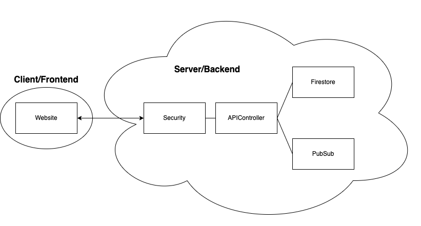

The domain
Customers browse movies across several cinemas, pick seats into an in-memory quote, confirm it, and get one booking containing tickets that may span multiple cinemas. Managers pull aggregate statistics across movies and customers. The system has to stay responsive under concurrent load and, above all, never double-book a seat.
Stage one: the same thing twice
The first stage builds the service over gRPC and then again over REST, which turns a technology comparison into something you have actually felt rather than read about.
The clearest difference is where the coupling sits. gRPC's generated stub is a client-side
proxy with tight integration and code generation behind it; REST has HTTP client libraries doing
a similar job with none of that. It is faster on HTTP/2 with protocol buffers, and it costs more
to set up — the .proto file, the generation step, the toolchain. REST is easier to
develop against and more susceptible to protocol-level error, being text-based over HTTP/1.1.
Both are a long way from a local Java method call, which simply has no network to fail on.
Thread safety, specifically
The thing worth getting right in the gRPC implementation is that StreamObserver
is not thread-safe, so onNext, onError and onCompleted
must not be called concurrently for one RPC. Each request gets its own observer instance, so
calls for different requests do not interfere. What genuinely needs synchronising is narrower:
the methods that touch shared state across concurrent requests — the repository. Marking
everything synchronised would have been easier and wrong for both correctness reasoning and
throughput.
What generated code costs
Generating the REST server from an OpenAPI spec was fast — the Order resource came together almost immediately because it was structurally similar to Meal, and the spec also yields client SDKs, Swagger UI documentation, model classes and test skeletons. The cost showed up in the same place: the generated Order class arrived spread across far more files than it needed, and a developer taking the code over has to learn OpenAPI before they can read it.
One subtlety worth flagging, because it is a common wrong assumption: marking
name as required in the spec does not mean you will always receive it. The client
must supply the field, but it can supply null, and the generated server does not check that for
you. The repository does, before a Meal is ever constructed.
Stage two: distributing it

Where indirect communication enters. Browsing and cart collection go straight to Firestore, because the user is waiting for the answer. Confirmation does not: when the user confirms a purchase, a message is published and a subscriber picks it up, decodes it and processes the booking. Requests queue instead of each demanding immediate server work, which is what improves both scalability and responsiveness as load grows.
That queue is also the answer to the double-booking requirement. Two clients confirming the same seat produce two queued messages processed one at a time; the second returns an error rather than a ticket. The trade-off is real and we named it in the report rather than hiding it: during seat selection the client syncs periodically, so a user can start selecting a seat someone else has already taken. Better usability there would cost the scalability the queue buys.
Middleware where it earned its place. Authentication was the clearest win. Verifying Firebase identity tokens and enforcing role-based access control is exactly the kind of work that is security-critical, tedious, and easy to get subtly wrong — and it collapsed into a security filter that intercepts the request and checks the caller's role before the manager-only endpoints are reached. Swapping providers later would mean rewriting that filter and the way roles are assigned and verified, which is a good summary of what an auth provider should ideally give you: role information the application can check in one place.
Surviving a service that fails. One of the cinemas the platform integrates with is deliberately unreliable. Every call to it is retried up to five times, which is enough for the failure rates in the exercise; raise the count and you buy reliability with latency. There is no number at which a sufficiently broken third party stops degrading your product, and being explicit about that is more useful than pretending the retry loop solves it.
Stage three: onto App Engine
The final stage deploys to Google App Engine with Cloud Firestore behind it.
The data model. Two collections. Bookings hold the booking id, timestamp, tickets and customer. Movies hold the movie, its cinema, name and image, with seats as a subcollection rather than a separate top-level collection — seats and movies are tied closely enough that separating them would only add a join, and nesting makes "all the seats for this movie" a single natural read.
What NoSQL cost. Queries are limited to a single collection, so fetching all movies or all tickets meant reading them individually and joining in application code where a relational database would have done it in one statement. That is the honest trade for the automatic sharding and cross-region replication that made the scalability requirement someone else's problem.
Consistency, at two strengths. Seat reservation needs strict all-or-nothing semantics, and Firestore transactions provide it by locking the documents involved and committing only if every condition holds. The notification path deliberately does not: it rides on Pub/Sub, retries on failure and settles for eventual consistency, because a confirmation email that fails to send must not roll back a booking that succeeded. Two different consistency requirements in one flow, and the design is mostly about not applying the strong one everywhere out of habit.
App Engine's automatic scaling was enabled so instance count follows traffic — performance at peak, minimal cost when idle — and the feedback channel sends the customer a confirmation or failure email through the Mailgun API once the worker has processed their booking.